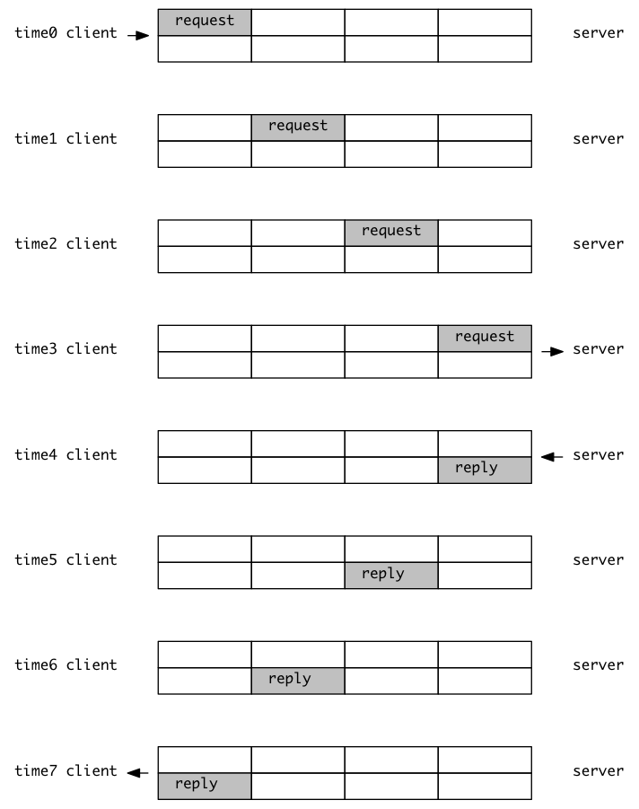
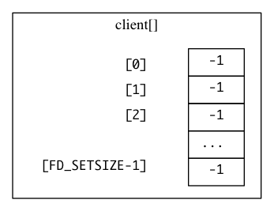
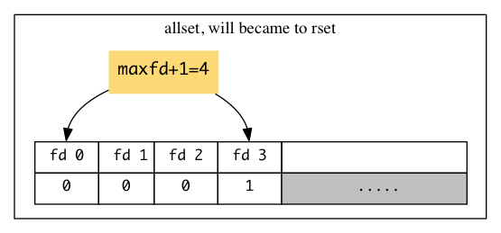
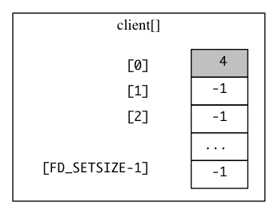
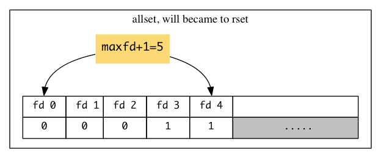

Chapter 6
Table of Contents
I/O Multiplexing: The select and poll Functions
Introduction
- 前面TCP client是同时处理两个input: standard input和TCP socket, 这个体系有很
大的问题:
- client会被block在fgets上面
- 当server被kill的时候,会发送FIN到client,但是因为client一直在处理standard的 IO,所以一直等到有机会处理socket IO的时候,才发现,原来我已经被server抛弃了.
- 所以,我们希望能够有一种新的功能:
我们能够在某个IO ready的情况下,被kernel通知(这样一来,我们就不必通过循环做busy waiting了). - 这种功能已经存在了,名字叫做I/O multiplexing并且是通过select和poll函数实现的
- I/O multiplexing在网络中的应用场景有如下:
- 当一个client处理多个descriptor的情况,I/O multiplexing必须得应用(这也是前面 提到的场景)
- 一个client同时处理多个sockets的情况(不是很常见)
- 一个server同时吹离listenng socket和connected socket的情况
- 一个server同时处理TCP和UDP的情况
- 一个server处理多个服务,并且属于多个协议的情况.
- I/O multiplexing不仅仅限于网络编程, 也在其他领域有作用
I/O Models
- 在我们解释select和poll之前,我们先总结一下Unix下面的五种I/O models:
- blocking I/O
- nonblocking I/O
- I/O multiplexing (select and poll)
- signal driven I/O (SIGIO)
- asynchronous I/O(the POSIX aio_ functions)
- 通过前面的例子,我们也知道对于"输入"这个操作, 有两个不同的阶段:
- 等待数据的到来
- 把数据从kernel拷贝到进程
- 对于socket来说,1)就是等待数据从网络上传来,然后数据拷贝到kernel的buffer 2)就 是把kernel buffer的数据传递到进程的buffer
Blocking I/O Model
- 最常见的IO模型是blocking I/O, 默认情况下所有的socket都是blocking的
application system call kernel / recvfrom ------------------> no datagram ready \ | | | | | | | | | | | |> wait for data | | | | V | | datagram ready / | process blocks | copy datagram \ in call to <| | | recvfrom | | | | | | | | | | | | | | | | | |> copy data from | | | kernel to user | | | | | | | | | | V | \ return OK | process <---------------------- copy complete / datagram - 我们上面的例子使用的是UDP,因为UDP不涉及到拆分数据包,重组数据包.对于UDP来说, 数据的"ready"就是要么一个datagram全来了,要么都没来
- 在整个调用system call recvfrom的时候,我们的process都是被block的,当我们从 recvfrom函数返回, 我们的application就会开始处理传来的datagram
Nonblocking I/O Model
- 如果设置了socket为nonblocking,我们就有了如下的流程图,言简意赅的解释就是"如
果我要求的IO操作无法马上返回要被迫进入sleep状态的话,请不要sleep,直接返回给
我错误得了"
application system call kernel / recvfrom ---------------> no datagram ready \ | EWOULDBLOCK | | | <-------------- | | | | | | recvfrom ---------------> no datagram ready | | EWOULDBLOCK | | | <-------------- | | | | |> wait for data process repeatly| recvfrom ---------------> no datagram ready | calls recvfrom | EWOULDBLOCK | | waiting for <| <-------------- | | an OK | | | | recvfrom ---------------> datagram ready / | | copy datagram \ | | | | | | | | | | | |> copy data from | | | kernel to user | | | \ return OK | process <---------------------- copy complete / datagram - 这种设置了nonblocking,然后在循环里面不停调用函数的做法叫做polling.
I/O Multiplexing Model
- I/O Multiple Model其实就是利用select来探测数据,然后用recvfrom在确定数据已
经在的情况下,去调用.
application system call kernel / select -----------------> no datagram ready \ process blocks | | | in call to | | | select waiting | | | for one of | | | possibly many <| | |> wait for data sockets to | | | become readable | return readable | | | <---------------- datagram ready / | system call \ recvfrom ----------------> copy datagram \ / | | | | | | | | | | | process blocks | | | while data | | | copied into <| | |> copy data application | | | from kernel buffer | | | to user | | | | | | | | | \ return OK | process <----------------- copy complete / datagram - 看上去好像非但不比blocking模型有优势,反而多调用了一次select system call. 其 实不然,因为select函数可以同时等待不止一个descriptor
- 所以，如果处理的连接数不是很高的话，使用select/epoll的web server不一定比使 用multi-threading + blocking IO的web server性能更好，可能延迟还更大。 select/epoll的优势并不是对于单个连接能处理得更快，而是在于能处理更多的连接.
Signal-Driven I/O Model
- Unix系统还为IO设计了一个SIGIO的信号,我们可以通过设置这个信号的handler来达到类
似select的作用
sigaction application system call kernel / establish SIGIO ----------------> \ | signal handler <---------------- | process | return | continues <| |> wait for data executing | deliveer SIGIO | | signale handler <---------------- datagram ready / | system call \ recvfrom ----------------> copy datagram \ / | | | | | process | | | blocks <| | | when data | | | copied | | | into | | |> copy data from application | | | kernel to user | | | | | | | | | | V | \ return OK | process <----------------- copy complete / datagram - 这种处理方法已经有非常大的效率上面的优势了, 这是第一种能有半天空闲的调用方法: 在第一个阶段,我们通过sigaction之后,进程的main函数可以正常的运行不会block, 而只有在收到信号,知道肯定有数据ready,正式开始读取数据的适合才block
Asynchronous I/O Model
- Asynchronous IO是比SIGIO信号法效率更高的处理方式:在数据处理的整个过程中进程 的main函数都可以自由的运行, 没有block!
- 我们通过aio_read把descriptor, buffer pointer,buffer size和通知成功的方法
传递给内核, 这个系统调用会马上返回的(不返回就是block了) 当我们要传的数据都已经
到我们制定的buffer里面了, 会有一个signal传递给我们的.
application system call kernel / aio_read ------------------> no datagram ready \ | ------------------- | | | | | | | | | | |> wait for | | | data | V | | datagram ready / | process | copy datagram \ continues <| | | executing | | | | | | | | | | | | | | | | | |> copy data | | | from kernel | | | to user | | | | | | | V | \ deliver signal | process <---------------------- copy complete / datagram specified in aio_read - 和上面signal-driven IO不同的是:
- 上面的signal-driven是说"等IO准备好可以开始拷贝了,再通知我, 我调用其他函 数来拷贝"
- 而Asynchronous IO是说"等IO全部拷贝好了再通知我"
Comparison of the I/O Models
- 下面是五种IO的对比,前四种的第二个phase都是一样的:block在recvfrom里面等待
着读取.Asynchronous IO最不同
blocking nonblocking I/O mulitplexing signal-driven I/O asynchronous I/O initiate check check initiate V check V V check V V check ready notification V V initiate initiate V V V V V V V V complete complete complete complete notification
Synchronous I/O versus Asynchronous I/O
- POSIX定义下面的两个术语:
- synchronous I/O 操作沪会导致进程阻塞,知道IO操作完成
- asynchronous I/O 操作不会导致提出IO要求的进程的阻塞
- 通过定义发现,前四种(blocking, nonblocking, I/O multiplexing, signal-driven IO)统统都是synchronous IO. 只有Asynchrous IO符合asynchronous IO的定义.
select Function
- 这个函数运行进程指导kernel,让其在某些特定条件下通知自己,比如:
- 集合{1,4,5}中有任何一个descriptor准备好读取了
- 集合{2,7}里面有任何一个descriptor准备好写入了
- 集合{1,4}里面有任何一个descriptor有了exception情况
- 10.2秒已经过去了.
- select的定义如下:
#include <sys/select.h> #include <sys/time.h> /*************************************************/ /* Returns: positive count of ready descriptors, */ /* 0 on timeout, -1 on error */ /*************************************************/ int select(int maxfdp1, fd_set* readset, fd_set* writeset, fd_set* exceptset, const struct timeval* timeout);
- 其中timeval的结构如下:
struct timeval { long tv_sec; /* secondes */ long tv_usec; /* microseconds */ };
- 我们在时间设置上面有如下几种情况:
- 一直等待下去: 我们只希望等待我们指定的descriptor,不想设置超时,那么就把 timeout参数为NULL
- 等待一个固定的时间:等待指定的descriptor,但是不能超过一定的时间.那么就把 timeout设置为具体数据
- 根本就不等待.如果我们把timeout参数设置为0的话,那么就退化成了busy wait 的polling.
- 上面所述的1,2两种情况都会受到signal的影响而让select中断(errno为EINTR), 某些 系统还是可以重启select(设置SA_RESTART), 某些系统还是要while loop重启
- timeval的设置还会出现两种"不准"的情况:
- 有些系统支持的最小时间精度是10ms,应用到最小精度为ms的tv_usec可能会出现一 些错误
- 有些系统不允许tv_sec设置为某些特别大的不合理的时间(比如1亿秒)
- timeout的参数有一个const,也就是说,你无法通过返回值来判断,真实的系统完成时间 为多少(有可能在指定时间之前就完成返回了)
- 中间三个参数readset, writeset和exceptset的类型都是fd_set*.其实fd_set*
就是int*(整形数组). 所有的descriptor号码都用整形数组的一个bit表述,比如,
descritpr为31,那么就是整形数组的第一个参数arr的最后一位bit,通过下面的
宏,我们可以让fd_set跨平台
void FD_ZERO(fd_set *fdset); /* clear all bitst in fdset */ void FD_SET(int fd, fd_set *fdset); /* turn on the bit for fd in fdset */ void FD_CLR(int fd, fd_set *fdset); /* turn off the bit for fd in fdset */ int FD_ISSET(int fd, fd_set *fdset); /* is the bit for fd on in fdset? */
- 对于exceptset参数来说,其只有下面两种选择(两个bit就够了)
- out-of-band 数据在socket上出现
- 控制信息出现在了pseudo-terminal上
- 如果我们把中间的三个fd_set*类型的数据设置为NULL的话,我们就得到了一个精度更 高的sleep(精度为ms). 实际上APUE上面就曾利用过select河poll来实现sleep_us
- maxfdp1参数的意思是前多少个descriptor被测试, 比如0,1,2,就是前"三"个descriptor 被测试(也就是最大的2+1,这也是maxfdp1中, 1的来历),设置"max file descriptor 加1"的目的是,我们能够减轻内核的负担. "我们保证只有前maxfdp1的会有问题",那么 就只需要检测[0,mafdp1)的数据啦.
- 每个进程能够拥有的descriptor的数目是一定的,在<sys/select.h>里面我们定义了 一个极值FD_SETSIZE(通常是1024)
- 如果我们把中间的三个fd_set*类型的数据都没有const,也就意味着select会改变他们
的值:
- 在调用select之前我们会把我们感兴趣的bit设置为1, 比如{1,3,4}有兴趣,就都设置 为1.那么输入就是01011
- select返回的时候,所有数据准备好的域都是1, 没准备好的(或者我们开始就设置为0的) 就还是0.比如13准备好了,那么返回值就是01010
- 函数的返回值代表了此次select有多少的descriptor可以readay了(当然是在我们关注 的那些descriptor中去选择)
- 返回值为-1,代表错误(比如返回-1,同时errno为EINTR,那么代表着函数被中断)
Under What Conditions Is a Descriptor Ready?
- 对于一个regular file来说,ready for "读"或者"写",都是很容易理解的.但是对于
socket来说(Unix下面一切皆文件,socket也被看做是一种文件),情况会复杂的多:
- 如果一个socket 满足下面任意一个condition就说它"准备好可读"了
- socket receive buffer的值比low-water mark要大(这样read就不会block, 并且会返回一个大于0的数字), 一般来说SO_RCVLOWAT为这个low-water mark的 默认值(一般为1)
- TCP处于半关闭状态,而且是read半关闭(收到FIN),这个时候read不会block,并且 会返回0
- socket是listening socket,并且completed queue里面的数目大于0, accept 这个listening socket不会block(有种timing condition会block accept, 后面会讲到)
- 会存在socket错误,存在错误的时候,read肯定会返回-1,也肯定不会block
- 如果一个socket 满足下面任意一个condition就说它"准备好可写"了
- 在socket send buffer里面的空间大于send buffer的low-water mark,并且要么 socket是connected, 要么socket不需要connection(UDP).send buffer的low-water mark一般数值为SO_SNDLOWAT(一般为2048)
- TCP处于半关闭状态,而且是write半关闭(发送FIN),这个时候write会产生SIGPIPE 信号
- 使用nonblocing的connect:要么成功完成了connection,要么connect失败
- 会存在socket错误,存在错误的时候,write肯定会置errno为一个错误状态的.这些错误 我们是可以通过getsockopt来读取的.
- 如果一个socket有out-of-band的数据,那么肯定返回exception condition pending
- 如果一个socket 满足下面任意一个condition就说它"准备好可读"了
- 我们可以看到如果socket上发生了错误,select会标记他"即可读又可写"
- 如果我们的读写在某一个数值下是无意义的,比如小于64个数据读取无意义,我们可以设置low-water mark 为64
Maximum Number of Descriptors for select
- 我们前面说过,大部分的应用都只会使用一小部分的descriptor,所以FD_SETSIZE的定 义足够用了.但是如果select想要使用更大数目的descriptor,那么仅仅简单的重定义 头文件里面的FD_SETSIZE是不够的,还需要重新编译内核.
str_cli Function (Revisited)
- 我们前面用两个循环设计过一次str_cli,那个版本的主要问题是client被困在等待两 个descriptor里面,在server已经关闭的情况下,却完全不知情,一定要再次输入打破 standard input才能发现socket descriptor的关闭.
- 下面我们使用select来构建新的版本, select设置standard input和socket两个
descriptor为其所关心,一旦哪个有可读的就返回.
#include "unp.h" void str_cli(FILE *fp, int sockfd) { int maxfdp1; fd_set reset; char sendline[MAXLINE], recvline[MAXLINE]; FD_ZERO(&rset); for( ; ;) { FD_SET(fileno(fp), &rset); FD_SET(sockfd, &rset); maxfdp1 = max(fileno(fp), sockfd) + 1; Select(maxfdp1, &rset, NULL, NULL, NULL); if (FD_ISSET(sockfd, &rset)) { /* socket is readable */ if (Readline(sockfd, recvline, MAXLINE) == 0) { err_quit("str_cli: server terminated prematurely"); } Fputs(recvline, stdout); } if (FD_ISSET(fileno(fp), &rset)) { /* input is readable */ if (Fgets(sendline, MAXLINE, fp) == NULL) { return; /* all done */ } Writen(sockfd, sendline, strlen(sendline)); } } }
- 从socket的角度,上面的这个程序有如下几个情况需要处理:
- 如果peer TCP传递了数据,那么socket就变得可读了.read()会返回一个大于0的数
- 如果peer TCP发送了一个FIN(peer process结束了,那么我们是passive close), 所以当前socket也是可读的,read()返回0(对方不想给我们说什么了,所以读取总是 nothing)
- 如果peer TCP发送了一个RST(peer host宕机或者重启), 那么socket也会变成readable, 只不过read()会返回-1. errno也会有相应的设置
Batch Input and Buffering
- 其实前面我们的str_cli版本依然不是理想的版本(当然,对于interactive的用户来说,
还不错).但是效率方面非常的差,这种模式叫做stop-and-wait模式,下面这个传输图标
有如下的假设:
- 我们把RTT分成八个相等的时间.
- 每个request和reply的在两个方向上传输时间相等
- server处理的时间为0
- 忽略其他不重要的时间,如TCP确认,握手,挥手的时间.

- stop-and-wait模式在处理交互性(interactive)的程序方面有一定优势,但是如果是单 单从网络传输信息的效率来看,实在是差(1/8的利用率),如果我们只关心网络的利用率, 希望尽可能快的传输数据,那么我们就进入了batch mode
- 下图就是batch mode的传输情况,我们可以看到,我们传输的速率是TCP能接受多快,我们就
传多快,即便当前没有数据: 换句话说就是
我们不再是根据newline来发起一次传输,而是如果网络上能同时承受N个包,那么我就 每过1/N个RTT时间发送一个包. - 利用batch mode的方法发送如果还用上一节的str_cli的话,会面临一个重要的问题:如 何判断结束:在上一节的str_cli中,我们是通过EOF来判断结束的,但是在batch mode中 EOF和其他数据一样没有区别:我们只是按频率在发送
- 比如,上图中,我们假设有8行输入,time7刚好发送完第8行,那么
- 如果不关闭connection, time8还是会传输数据.
- 如果关闭了connection,那么server端还有数据传递怎么办
- 所以,结论是要half close connection,发送一个FIN给server就行(程序实现的方法是 shutdown函数)
- 把stdio的函数和select一起使用是非常危险的,因为select并不知道stdio的函数的buffer 的情况.
shutdown Function
- close是关闭网络连接的方法,引入shutdown是为了弥补close的两个局限性:
- 前面我们在fork出子进程处理connection的时候说了,close首先只会减少ref count,只有你的ref count到达0的时候,它才会真的发起"四次挥手", 但是shutdown 没有这个问题,只要调用了shutdown,无论ref count是多少,都开始"四次挥手"
- TCP是个双向车道(全双工), close一下子就关闭了两个方向的车道.TCP特有 的half close,就要靠shutdown来实现.
- shutdown函数声明如下:
#include <sys/socket.h> int shutdown(int sockfd, int howto);
- howto函数的值有如下:
- SHUT_RD: connection的read half被关闭,不能从socket上再读取任何的数据,socket receive buffer里面的数据全部丢弃.以后再从server接受到的数据,会ACK,然后丢弃. (因为是无法单方面提起read half close的,所以只是内核标记这个connection无法 读取了,实际上对方还是可以传递数据过来的,我们也会确认,只是不让应用层读取了)
- SHUT_WR: connetion的write half被关闭,不能冲socket上再写入任何数据, socket send buffer里面的数据会全部发送完毕.这才是真正的half close(只有write half close,没有read half close), 因为可以使用发送FIN到对方的方式来解决.而且无论 ref descriptor是不是零,都会发送FIN到对方
- SHUT_RDWR: read half和write half都关闭,这相当于调用两次shutdown:一次用参数 SHUT_RD,一次用参数SHUT_WR
str_cli Function (Revisited Again)
- 我们来看看引入了shutdonw和select之后的str_cli的代码
#include "unp.h" void str_cli(FILE *fp, int sockfd) { int maxfdp1, stdineof; fd_set reset; char buf[MAXLINE]; int n; stdineof = 0; FD_ZERO(&rset); for (; ;) { if (stdineof == 0) { FD_SET(fileno(fp), &rset); } FD_SET(sockfd, &rset); maxfdp1 = max(fileno(fp), sockfd) + 1; Select(maxfdp1, &rset, NULL, NULL, NULL); if (FD_ISSET(sockfd, &rset)) { /* socket is readable */ if ((n = Read(sockfd, buf, MAXLINE)) == 0) { if (stdineof == 1) { return; } else { err_quit("str_cli: server terminated prematurely"); } Write(fileno(stdout), buf, n); } } if (FD_ISSET(fileno(fp), &rset)) { /* input is readable */ if ((n = Read(fileno(fp), buf, MAXLINE)) == 0) { stdineof = 1; Shutdown(sockfd, SHUT_WR); /* send FIN ==> half close */ FD_CLR(fileno(fp), &rset); continue; } Writen(sockfd, buf, n); } } }
- 新的实现引入了一个flag stineof, 初始化的时候为0, 只要这个flag为0,我们就在 select的时候考虑standard input, 注意EOF是end of line (ctrl + D), 这里命名成 stdineof的原因是, socket和standard input都最终会有自己的EOF的,而standard input的到来更早些,所以我们把它作为一个flag
- 在读取socket的时候,如果读到socket的EOF,而且此时stdineof也是出现过了(值为1), 那么说明这是正常的退出, 直接return
- 在读取standard input的时候读取到EOF,这个时候就把flag stdineof设置为出现(为1), 然后调用shutdown函数来半关闭.
TCP Echo Server (Revisited)
- 既然我们引入了select,那么我就可以在server端使用select来管理所有的socket(因
为socket本质上是file). 使用了select的话,多进程(fork)就变得不必要了
1: #include "unp.h" 2: 3: int main(int argc, char *argv[]) 4: { 5: int i, maxi, maxfd, listenfd, connfd, sockfd; 6: int nready, client[FD_SETSIZE]; 7: ssize_t n; 8: fd_set rset, allset; 9: char buf[MAXLINE]; 10: socklen_t clilen; 11: struct sockaddr_in cliaddr, servaddr; 12: 13: listenfd = Socket(AF_INET, SOCK_STREAM, 0); 14: 15: bzero(servaddr, sizeof(servaddr)); 16: servaddr.sin_family = AF_INET; 17: servaddr.sin_addr.s_addr = htonl(INADDR_ANY); 18: servaddr.sin_port = htons(SERV_PORT); 19: 20: Bind(listenfd, (SA*)&servaddr, sizeof(servaddr)); 21: 22: Listen(listenfd, LISTENQ); 23: 24: maxfd = listenfd; /* initialize */ 25: maxi = -1; /* index into client[] array */ 26: for (i = 0; i < FD_SETSIZE; i++) { 27: client[i] = -1; /* -1 indicates available entry */ 28: } 29: FD_ZERO(&allset); 30: FD_SET(listenfd, &allset); 31: 32: for (; :) { 33: rset = allset; /* structure assignment */ 34: nready = Select(maxfd + 1, &rset, NULL, NULL, NULL); 35: 36: if (FD_ISSET(listenfd, &rset)) { /* new client connection */ 37: clilen = sizeof(cliaddr); 38: connfd = Accept(listenfd, (SA*)&cliaddr, &clilen); 39: 40: for (i = 0; i < FD_SETSIZE; i++) { 41: if (client[i] < 0) { 42: client[i] = connfd; /* save descriptor */ 43: break; 44: } 45: } 46: if (i == FD_SETSIZE) { 47: err_quit("too many clients"); 48: } 49: FD_SET(connfd, &allset); /* add new descriptor to set */ 50: 51: if (connfd > maxfd) { 52: maxfd = connfd; 53: } 54: if (i > maxi) { 55: maxi = i; 56: } 57: if (--nready <= 0) { 58: continue; 59: } 60: } 61: 62: for (i = 0; i <= maxi; i++) { 63: if ((sockfd = client[i]) < 0) { 64: continue; 65: } 66: if (FD_ISSET(sockfd, &rset)) { 67: if ((n = Read(sockfd, buf, MAXLINE)) == 0) { 68: /* connection closed by client */ 69: Close(sockfd); 70: } else { 71: Writen(sockfd, buf, n); 72: } 73: 74: if (--nready <= 0) { 75: break; 76: } 77: } 78: } 79: } 80: return 0; 81: }
- 程序非常的长,慢慢来分析:
- line 13-22这部分是创建listening socket, 还是老三样:socket(),bind(), listen().
- line 22-30有两个数据很关键:
- 一个client[]数组,用来跟踪所有的client,因为一个进程最大的file descriptor
数目有限,所以client数组的大小是FD_SETSIZE.数组的初始化值为(-1),表示
相应index的client没有连接, maxi这是最大的以连接的index.整数表示连接到哪个
descriptor

- maxfd = listenfd说明这个阶段关心的只到listening socket,还不关心其他的descriptor,
也没有其他的descriptor(前三个descriptor分别对应standard input, standard output,
standard erro, 所以listenfd最小也得是4)

- 一个client[]数组,用来跟踪所有的client,因为一个进程最大的file descriptor
数目有限,所以client数组的大小是FD_SETSIZE.数组的初始化值为(-1),表示
相应index的client没有连接, maxi这是最大的以连接的index.整数表示连接到哪个
descriptor
- line 32-33: 一个大循环每次等待数据的ready(每次rset会被allset所覆盖,因为
allset会加上每次connected成功的descriptor line42), ready通常意味这两种
情况:
- listening 的connection又来了新的请求:新的成员从completed queue里面出来 形成新的connection
- 已经连接成功的connection来了数据(也可能是信息,比如FIN, RST)
- line 36-60是处理listening connection的地方,listening socket可读,就说明一个
connection已经成功建立了,我们调用accept就可以返回新的descriptor.我们用nready
来记录这次select有几个需要处理的connection,处理完一次就减一.如果为0了,那么下
一个处理已经连接成功的connection的for就不需要进入了.
- 新的client[] slot会被填充 line 42:

- allset也会增加(以后会变成rset) line 49:

- 新的client[] slot会被填充 line 42:
- line 62-78: 是第二个循环,来处理已经连接的connection,是通过从0开始到maxi 逐个检查已经connected过的连接的方法.检测到来袭的数据,那么我们就write back 回去.如果read为0,那么说明client已经关闭了连接,我们也不含糊,直接close().
Denial-of-Service Attacks
- 很可惜的是,我们刚才完成的代码有一个很致命的问题:恶意用户可以connected到我们的 server,发送一个字节,然后sleep. server当然要响应这个用户,打开一个连接读取那个 字节,然后hung在那里等client的新的数据.无法为其他用户服务:"在处理多个client服务 的时候,server"永远不能"block在处理某一个client的函数里面,如果这样的话server会 huang住无法为其他client提供服务"–>这就叫做denial-of-service
- 解决denial-of-service的方法有:
- nonblocking I/O
- 为每一个client提供一个thread(只是暂时解决问题,遇到攻击,会出现procesID用 尽的问题)
- 为IO操作设置一个timer
pselect Function
- POSIX发明了一个pselect,很多Unix系统已经支持它了
#include <sys/select.h> #include <signal.h> #include <time.h> /*****************************************************************/ /* Returns: count of ready descriptor, 0 on timeout, -1 on error */ /*****************************************************************/ int pselect(int maxfdp1, fd_set* readset, fd_set* writeset, fd_set* exceptset, const struct timespec* timeout, const sigset_t *sgmask);
- 和普通的select相比pselect有如下变化:
- 使用了timespec,而不是timeval, tv_usec是纳秒级别,更加精确
struct timespec { time_t tv_sec; /* seconds */ long tv_nsec; /* nanoseconds */ };
- 增加了第六个参数:指向signal mask的指针:因为select有block的可能,在select被
block的时候,可能会有signal丢失,或者signal会打扰select的block:
- 想要既不丢失signal,又不打扰我们的select,就要用到sigprocmask:
/* 如果oset不是NULL指针的话，当前的signal mask会保存到这里 */ /* 如果set不是NULL指针的话，第一个参数how决定了怎么处理set所包含的signal mask的处理方式 */ /* how共有三个值: */ /* SIG_BLOCK 设置当前的signal mask为set和原有signal mask的并集 */ /* SIG_UNBLOCK set是我们想从原有signal mask中unblock掉的信号 */ /* SIG_SETMASK 用set来替换原有的signal mask. */ sigprocmask(int how, const sigset_t *restrict set, sigset_t * restrict oset)
- 从某种意义上来讲,pselect就是收到sigprocmask保护的select
ready = pselect(nfds, &readfds, &writefds, timeout, &sigmask); /************************************************************************/ /* Previous line equals following three lines(timeout maybe different): */ /************************************************************************/ sigprocmask(SIG_SETMASK, &sigmask, &origmask); ready = select(nfds, &readfds, &writefds, &exceptfds, new_timeout); sigprocmask(SIG_SETMASK, &origmask, NULL);
- 想要既不丢失signal,又不打扰我们的select,就要用到sigprocmask:
- 使用了timespec,而不是timeval, tv_usec是纳秒级别,更加精确
poll Function
- poll 函数原来是SVR3为STREAM设备开发的,后来改为对所有类型文件(也就是所有类型
的descriptor)的支持, poll和select的功能相似,但是多了STREAM支持(STREAM被Linux
所淘汰), 以及没有FD_SETSIZE的限制
#include <poll.h> /******************************************************************/ /* Returns: count of ready descriptors, 0 on timeout, -1 on error */ /******************************************************************/ int poll(struct pollfd *fdarray, unsigned long nfds, int timeout);
- pollfd是一个新的自定义类型,集合了某一fd的所有condition
struct pollfd { int fd; /* descriptor to check */ short events; /* events of interest on fd */ sthort revents; /* events that occurred on fd */ };
- 需要测试的condition设置在events, poll返回的时候,会把fd的status信息写入到
revents成员里面.(使用两个成员变量的方法,防止了"调用的时候设置,返回的时候复
写内存"的方法),下面是这两个condition可能的值:分成了三部分:读,写,错误信息.
Constant Input to Result from Description events? events? POLLIN Yes Yes Normal or priority band data can be read POLLRDNORM Yes Yes Normal datat can be read POLLRDBAND Yes Yes Priority band data can be read POLLPRI Yes Yes High-priority data can be read POLLOUT Yes Yes Normal data can be written POLLWRNORM Yes Yes Normal data can be written POLLWRBAND Yes Yes Priority band data can be read POLLERR No Yes Error has occurred POLLHUP No Yes Hangup has occurred POLLNVAL No Yes Descriptor is not an open file - 对于TCP和UDP来说,下面的condition会让poll返回相应的revent,不幸的是POSIX没有说
的太具体
- 所有的正常TCP,UDP信息会被认为是normal
- TCP的out-of-band会被认为是priority band
- TCP的half close情况下依然会被认为是normal
- TCP的error可能会被认为是error或者normal
- TCP的listening connection收到信息有new connection,也会被认为是priority或 者normal
- nonblocking connect会让poll认为这个socket可写
- 如果我们对某个descriptor不再感兴趣,我们只要把fdarray里面响应的struct pollfd 的fd设置成负数就行
- timeout参数可以设置的数值如下(INFTIM为POSIX规定的负数),某些系统时间精度不到
ms,可能会有误差:
timeout value Description INFTIM Wait forever 0 Return immediately, do not block >0 Wait specified number of milliseconds - 我们前面提到过select所关心的descriptor总数有限制:FD_SETSIZE,在poll这里,这个 限制不存在了,因为我们不再使用select类似的固定的参数,这些参数原来是在stack上面 设置的,不可能无限大.而限制poll使用的是用户申请的.那么原则上,可以无限的大(放在 heap上面),当然不太大的时候,还是可以放到stack上面.
- 其实现在的第一选择还不是poll,而且linux的epoll,因为就算poll没有FD_SETSIZE的缺 点,但是他却需要O(n)的复杂度来轮询fdarray.这个是无法避免的(其实select也一样,我 们从select那里仅仅知道了，有I/O事件发生了，但却并不知道是那几个流（可能有一个， 多个，甚至全部），我们只能无差别轮询所有流，找出能读出数据，或者写入数据的流， 对他们进行操作.)
- Linux的epoll创造性的使用内核"推送"的方式(具体是我们关心的fd会调用callback函数, 从而让内核知道了哪些fd是"活跃的",而把活跃的函数作为返回值返回)实现了一个"伪AIO (Asynchronous IO)".
TCP Echo Server(Revisited Again)
- 既然介绍了比select功能更强大的poll,我们就来看看如何用poll来实现我们的server,
其实现思路和select版本相似.
#include "unp.h" #include <limits.h> /* for OPEN_MAX */ int main(int argc, char *argv[]) { int i, maxi, listenfd, connfd, sockfd; int nready; ssize_t n; char buf[MAXLINE]; socklen_t clilen; struct pollfd client[OPEN_MAX]; struct sockaddr_in cliaddr, servaddr; listenfd = Socket(AF_INET, SOCK_STREAM, 0); bzero(&servaddr, sizeof(servaddr)); servaddr.sin_family = AF_INET; servaddr.sin_addr.s_addr = htol(INADDR_ANY); servaddr.sin_port = htons(SERV_PORT); Bind(listenfd, (SA*) &servaddr. sizeof(servaddr)); Listen(listenfd, LISTENQ); client[0].fd = listenfd; client[0].events = POLLRDNORM; for (i = 1; i < OPEN_MAX; i++) { client[i].fd = -1; } maxi = 0; for (; ;) { nready = Poll(client, maxi + 1, INFTIM); if (client[0].revents & POLLRDNORM) { /* new client connection */ clilen = sizeof(cliaddr); connfd = Accept(listenfd, (SA*)&cliaddr, &clilen); for (i = 1; i < OPEN_MAX; i++) { if (client[i].fd < 0) { client[i].fd = connfd; /* save descriptor */ break; } } if (i == OPEN_MAX) { err_quit("too many clients"); } client[i].events = POLLRDNORM; if (i > maxi) { maxi = i; } if (--nready <= 0) { continue; } } } for (i = 1; i <= maxi; i++) { /* check all clients for data */ if ((sockfd = client[i].fd) < 0) { continue; } if (client[i].revents & (POLLRDNORM | POLLERR)) { if ((n = read(sokfd, buf, MAXLINE)) < 0) { if (errno == ECONNERESET) { /* connection reset by client */ Close(sockf); client[i].fd = -1; } else if (n == 0) { /* connection close by client */ Close(sockfd); client[i].fd = -1; } else { Writen(sockfd, buf, n); } if (--nready <= 0) { break; } } } } return 0; }